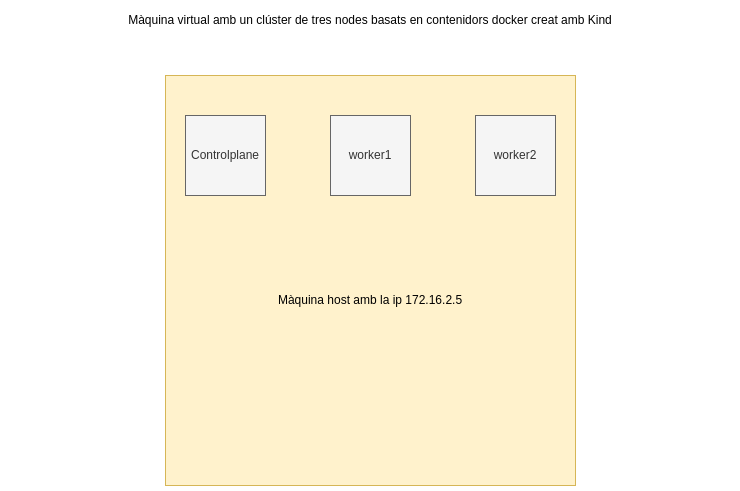

Desplegament d'un clúster de Kubernetes amb Kind
Vídeo a la prova realitzada: Proves amb kind: daemonset, job, cronjob, configmap i secrets.
Objectiu

Crear un clúster amb Kind i provar alguns dels recursos de la seva API: daemonSet, job, cronjob, configmap i secret.
Com que Kind és una distribució de Kubernetes basada en contenidors docker, en aquesta ocasió només s'utilitzarà una màquina virtual de l'entorn de proves.
Creació del clúster
Creem un fitxer kind-example-config.yaml amb el següent contingut:
apiVersion: kind.x-k8s.io/v1alpha4
kind: Cluster
nodes:
- role: control-plane
- role: worker
- role: worker
extraPortMappings:
- containerPort: 30000
hostPort: 7000
kind create cluster --config kind-example-config.yaml
export KUBECONFIG per poder utilizar kubectl
Etiquetes de rol als dos nodes workers
kubectl label node kind-worker node-role.kubernetes.io/worker=worker
kubectl label node kind-worker2 node-role.kubernetes.io/worker=worker
Crear un DaemonSet amb Fluentd
Un DaemonSet és un recurs de Kubernetes que s'assegura que a cada node del clúster es desplegui una còpia d'un pod. S'utilitza per recol·lecció de logs, monitoratge de nodes o per executar processos relacionats amb volums, en segon pla.
apiVersion: apps/v1
kind: DaemonSet
metadata:
name: fluentd
namespace: default
labels:
app: fluentd
spec:
selector:
matchLabels:
name: fluentd
template:
metadata:
labels:
name: fluentd
spec:
containers:
- name: fluentd
image: fluentd:latest
Job
Un Job és un recurs que pot crear 1 o més pods per executar tasques en paral.lel. S'utilitza en casos que es requereix executar processos batch, càlculs d'operacions que requereixen gran quantitat de recursos de computació. Alguns exemples són: càlculs de decimals del nombre pi, consultes a bases de dades, renderització, etc.
apiVersion: batch/v1
kind: Job
metadata:
name: my-job
spec:
template:
metadata:
name: my-job
spec:
containers:
- name: containerjob
image: alpine
command:
- "/bin/sh"
- "-c"
args:
- |
apk --no-cache add ca-certificates curl jq
update-ca-certificates
curl -H "Accept: application/json" https://swapi.dev/api/people/?search=yoda | jq '.results[] | { name, homeworld, species }'
restartPolicy: Never
Cronjob
Un Cronjob és similar a un Job, però que es planifica perquè es repeteixi periòdicament.
apiVersion: batch/v1
kind: CronJob
metadata:
name: hello
spec:
schedule: "*/1 * * * *"
jobTemplate:
spec:
template:
spec:
containers:
- name: hello
image: busybox
args:
- /bin/sh
- -c
- date; echo Hello from the Kubernetes cluster
restartPolicy: OnFailure
ConfigMap
Un ConfigMap és un recurs de Kubernetes que permet emmagatzemar dades de configuració com ara variables d'entorn, nombre de ports, entre d'altres i poder-los aplicar en altres fitxers manifests.
apiVersion: v1
kind: ConfigMap
metadata:
name: my-configmap
data:
VARIABLE1: mongodb
VARIABLE2: redis
containers:
- name: container1
image: nginx:alpine
volumeMounts:
- name: config-volume
mountPath: /usr/share/nginx/html
envFrom:
- configMapRef:
name: my-configmap
Secret
Un Secret és un objecte de Kubernetes que s'utilitza per emmagatzemar informació confidencial, com contrasenyes o tokens d'una API. Es poden referenciar els seus valors com a variables d'entorn o bé muntar els seus valors en volums.
Es pot codificar/decodificar:
echo -n "Tyrion" | base64
echo -n "VHlyaW9u" | base64 --decode
apiVersion: v1
data:
username: VHlyaW9u
password: TGFubmlzdGVy
kind: Secret
metadata:
creationTimestamp: "2023-11-27T19:32:18Z"
name: my-secret
namespace: default
resourceVersion: "49319"
uid: f62ae573-a38e-4dc4-beae-198752c267de
type: Opaque
o bé de forma imperativa '''kubectl create secret generic my-secret --from-literal=username=my-username --from-literal=password=my-password -o yaml >> my-secret.yaml'''
Una vegada es crea el secret es pot afegir als manifests yamls, com per exemple a un pod:
apiVersion: v1
kind: Pod
metadata:
name: my-pod
spec:
containers:
- name: nginx
image: nginx:alpine
envFrom:
- secretRef:
name: my-secret
Secret encriptat amb kubeseal
Com que els secrets estan codificats en base64, per afegir una capa extra de seguretat es poden encriptar amb eines com kubeseal.
Aquesta eina permet encriptar secrets amb un certificat, i després el mateix clúster s'encarrega de desencriptar-lo. Pot ser una bona pràctica quan es pengen secrets a repositoris (encara que siguin privats).
Una vegada tenim descarregat el client i el Sealed Secrets Controller, podem crear un secret:
apiVersion: v1
kind: Secret
metadata:
creationTimestamp: null
name: my-secret-2
namespace: default
data:
password: ZWxkZXNlbXByZQ==
username: MTIzNDU=
Obtenim la clau pública del certificat
kubeseal --fetch-cert > public-key-cert.pem
Encriptem el fitxer yaml del secret
kubeseal --format=yaml --cert=public-key-cert.pem < secret.yaml > sealed-secret.yaml
y quedaria de la següent manera:
apiVersion: bitnami.com/v1alpha1
kind: SealedSecret
metadata:
creationTimestamp: null
name: my-secret-2
namespace: default
spec:
encryptedData:
password: AgAk4Jq54VeRuFhzGPO3784Nqx7iAPg8+gnMTM2dFHXFTg1RzNXOYg0kib7OWSq85rhhqXNpPiOLf9Ex5urT3xqnwcvcW4ZPA3ZOrYvm8lEc2M00PZlQVNEmNEt8aqDQ+8GaU2IUrspV5KJhuhq4MzlWRnxTfDmsQ1bxj/8k8jpX0knbLQ7+lvZAbGzXvqR0WDqw24wylqu3ZwtWCeJs4aif1WyOQUNNkx0NgzLkbVSpWm9Ri6523AkwZbbuLNdugZyBuDB+PO2fDM6eJ8pjLjqLH/RwCPFVvposuLlqGBzZqBE799C1mt6fVVTBaso8pPR6rW3CgA48ZzXLmAaXprJ3D/yJjL6KQnUX0TaasLiPPCxkGXqNmuKWVs6pCaQZSBT1lF1rFNQ2rG1GsimOr/ngfpyqZbqS7BJicYVRz01AtmTVuild8LxYXeGiMVo9wBSLOqc/UrTP95mjsWiGj6jnlXr1sJk8TZMTZMgBKqJZvOglRE5sxJp0JSVkpwj/PAajGYloLn9Ue7jXOw3frudnSpwoA7n6ZBmhiRODp6tji/m/CeSXplGyrlk3fDMcj+iqodfXa58FkFHC+TXRZuKEzxbSCKUzzT7B2NCeZcMNZEu/bo5Ys6N03VQKYq1g1IYhlGNPZTxZ3bLbPZtD0CnEvIDaUg+bTed0L+SSZ9Lx+qWsB9EhpITvsHxz8C5qZqNy9nP8CO3UgQnf
username: AgAc57N+49tg7RBHpSCf7Ped7ZAeEL3WJ3K7LfOzvp4iG2oeCRBrUt8bj99Im9s7laLzIs0vQQZFd17XqC08r4yFmHly/bezH4dAotVfzUpZ1gqTR63qfCE9YPX0TboaqKcnlYdDPZgt9qlIId1xc0PImVHQVr+6R421X90xkY8WhnXPlC1c8voiah34AuEfu+BDsY0OExDxoDcJYuTmlxFb75n7c5W+Zc3HO8SuwBIQVAcRL8m3NQelky9DTNMjvG5pMpLsAqstPu6rX8Lg0BvMzSG4ns3h97ao/H55rfJK5vBIK8UzMM9DkB2xTT+BN48NdNqHR6Szyc9qQLynuTczEIHh+LyhB31RsVp9Ogb4upuCaiJu2OrvrdKmsutiaT3qKq9qxtuBTX9jbe7mqZUZkY3JiPS/JiTsxKJwJdOJvMXByKkFUfijAaouXKByiaSdB2xjCuZ8Fnl4cu5kk71S/6B/ftcOFHrEyqiHPKh1WUkFi4qh5vOtyUtHNFlGGtnDXEiBv+R6j509lCclR05byLmfGMnjv7np6n86hjULcpPxqdi9B07sGIb1dGtu9MEi59v0EfenVvDZT88AlKd2Dl65sQyaNC2akwxTuop7wIQ+xrzyt5EFRsLin7TSN/w7HT1JXROJ2zLs5c92V/XkYsze23deexuuasfIt9Av6ytVGFug9xjRaTOpJeMX8A1lo5vaOQ==
template:
metadata:
creationTimestamp: null
name: my-secret-test
namespace: default
kubectl apply -f sealed-secret.yaml
A partir d'aquest moment es pot esborrar el secret i aplicar el secret encriptat. S'ha de tenir present que el secret i el secret sealed han d'estar en el mateix namespace.
Finalment, quan es faci ús del secret sealed, el clúster, descodificarà automàticament les contrasenyes encriptades.